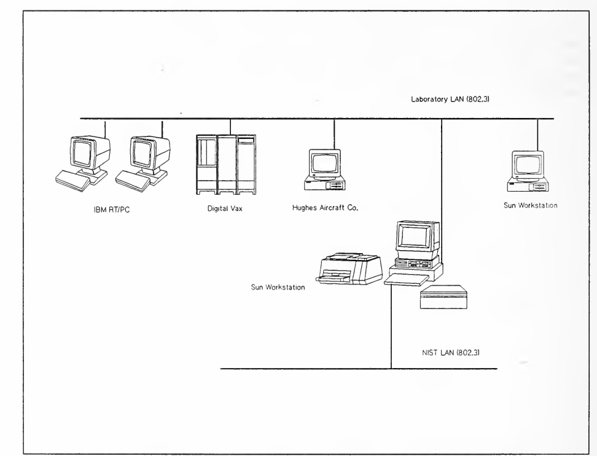

NIST IR 4228 日本語訳
英語タイトル : Prototyping SP4: a Secure Data Network System Transport Protocol Interoperability Demonstration Project日本語タイトル : SP4 のプロトタイピング：セキュアデータネットワークシステム（SDNS）のトランスポートプロトコル相互運用性デモンストレーションプロジェクト
公開日 : 1990-01-01
原文URL : https://csrc.nist.gov/pubs/ir/4228/final
原本 PDF : https://doi.org/10.6028/NIST.IR.90-4228
訳文 : 有志による非公式の日本語訳（AI による翻訳とレビュー）。全 280 段落を翻訳済み（原文取得日 : 2026-10-31）
[要約] NIST IR 4228 は、SP4 のプロトタイピングとして行われた、SDNS のトランスポートプロトコルの相互運用性デモンストレーションプロジェクトを報告するもので、Charles Dinkel、Noel Nazario、Robert Rosenthal が執筆しました。NIST の SDNS プロジェクトは、分散アプリケーションのためのコンピューター間の通信セキュリティを実装するもので、SP4 は OSI のトランスポート層（第 4 層）で機密性と完全性のセキュリティサービスを提供するセキュリティプロトコルです。報告書は、IBM、Digital Equipment Corporation、Hughes Aircraft Company の SP4 実装の説明と特徴、SP4 プロトタイプの実験室での試験結果を述べ、SP4 の実験室試作品が、提案されている自主的な国家標準の基礎となったと説明しています。あわせて、NIST の SP4 参照実装と適合性試験方法論、OSI セキュリティラボのマイルストーンとガイドライン、NIST の SP4 デモンストレーションの合意事項も扱っています。
NEW NIST PUBLICATION
NIST 新刊
December 1989
1989年12月
PROTOTYPING SP4 A SECURE DATA NETWORK SYSTEM TRANSPORT PROTOCOL INTEROPERABILITY DEMONSTRATION PROJECT
SP4の試作：セキュアデータネットワークシステムのトランスポートプロトコル相互運用性実証プロジェクト
Charles Dinkel Noel Nazario Robert Rosenthal
Charles Dinkel Noel Nazario Robert Rosenthal
U.S. DEPARTMENT OF COMMERCE National Institute of Standards and Technology National Computer Systems Laboratory Computer Security Division Gaithersburg, MD 20899
米国商務省 国立標準技術研究所 国立コンピューターシステム研究所 コンピューターセキュリティ部 Gaithersburg, MD 20899
U.S. DEPARTMENT OF COMMERCE Robert A. Mosbacher, Secretary Lee Mercer, Deputy Under Secretary for Technology NATIONAL INSTITUTE OF STANDARDS AND TECHNOLOGY Raymond G. Kammer, Acting Director
米国商務省 Robert A. Mosbacher 長官 Lee Mercer 技術担当副次官 国立標準技術研究所 Raymond G. Kammer 所長代行
NISTIR 90-4228
NISTIR 90-4228
PROTOTYPING SP4 A SECURE DATA NETWORK SYSTEM TRANSPORT PROTOCOL INTEROPERABILITY DEMONSTRATION PROJECT
SP4の試作：セキュアデータネットワークシステムのトランスポートプロトコル相互運用性実証プロジェクト
Charles Dinkel Noel Nazario Robert Rosenthal
Charles Dinkel Noel Nazario Robert Rosenthal
U.S. DEPARTMENT OF COMMERCE National Institute of Standards and Technology National Computer Systems Laboratory Computer Security Division Gaithersburg, MD 20899
米国商務省 国立標準技術研究所 国立コンピューターシステム研究所 コンピューターセキュリティ部 Gaithersburg, MD 20899
January 1990
1990年1月
U.S. DEPARTMENT OF COMMERCE Robert A. Mosbacher, Secretary Lee Mercer, Deputy Under Secretary for Technology NATIONAL INSTITUTE OF STANDARDS AND TECHNOLOGY Raymond G. Kammer, Acting Director
米国商務省 Robert A. Mosbacher 長官 Lee Mercer 技術担当副次官 国立標準技術研究所 Raymond G. Kammer 所長代行
TABLE OF CONTENTS
目次
•要旨
•序文
•略語一覧
•参考文献
PROTOTYPING SP4 A SECURE DATA NETWORK SYSTEM TRANSPORT PROTOCOL INTEROPERABILITY DEMONSTRATION PROJECT
SP4の試作：セキュアデータネットワークシステムのトランスポートプロトコル相互運用性実証プロジェクト
Charles Dinkel, Noel Nazario, and Robert Rosenthal Computer Security Division National Computer Systems Laboratory National Institute of Standards and Technology Gaithersburg, Maryland 20899
Charles Dinkel, Noel Nazario, and Robert Rosenthal コンピューターセキュリティ部門 国立コンピューターシステム研究所 国立標準技術研究所 Gaithersburg, Maryland 20899
ABSTRACT
要旨
The NIST Secure Data Network System (SDNS) project implements computer to computer communications security for distributed applications. The internationally accepted Open Systems Interconnection (OSI) computer networking architecture provides the framework for SDNS, which is a project of the National Security Agency (NSA). SDNS utilizes the layering principles of OSI to implement secure data transfers between computer nodes of local area and wide area networks. SDNS implements SP4, a security protocol at the OSI Transport layer (layer 4) that provides end-to-end reliable transparent data communications with confidentiality and integrity security services. Laboratory prototypes of SP4 formed the basis of proposed voluntary national standards and will form the basis for future security enhancements for the Government Open Systems Interconnection Profile (GOSIP).
NIST のセキュアデータネットワークシステム（SDNS）プロジェクトは、分散アプリケーションのためのコンピューター間通信のセキュリティを実装します。国際的に受け入れられている開放型システム間相互接続（OSI）のコンピューターネットワークアーキテクチャが、SDNS の枠組みを提供します。SDNS は国家安全保障局（NSA）のプロジェクトです。SDNS は、OSI の階層化の原則を利用して、ローカルエリアネットワークとワイドエリアネットワークのコンピューターノード間で安全なデータ転送を実装します。SDNS は、OSI のトランスポート層（第 4 層）のセキュリティプロトコルである SP4 を実装します。SP4 は、機密性と完全性のセキュリティサービスを備えた、エンドツーエンドの信頼性のある透過的なデータ通信を提供します。SP4 の実験室試作品は、提案されている自主的な国家標準の基礎となり、政府開放型システム間相互接続プロファイル（GOSIP）の将来のセキュリティ強化の基礎となります。
KEY WORDS
キーワード
Computer security, conformance testing, local area networks (LAN), network security, protocol security, SDNS, transport protocols
コンピューターセキュリティ、適合性試験、ローカルエリアネットワーク（LAN）、ネットワークセキュリティ、プロトコルセキュリティ、SDNS、トランスポートプロトコル
PREFACE
序文
The Computer Security Act of 1987 (P.L. 100-235), focuses attention on the need to protect sensitive government information. The National Institute of Standards and Technology (NIST) is assigned the responsibility for developing standards and guidelines to improve the Federal Government's management and use of computer and related telecommunications systems. Included in this effort is developing cost-effective security mechanisms for providing privacy and security of sensitive information in Federal computer systems.
1987 年コンピューターセキュリティ法（P.L. 100-235）は、機微な政府情報を保護する必要性に注意を向けています。国立標準技術研究所（NIST）は、連邦政府によるコンピューターおよび関連する電気通信システムの管理と利用を改善するための標準とガイドラインを策定する責任を負っています。この取り組みには、連邦コンピューターシステムにおける機微な情報のプライバシーとセキュリティを提供する、費用対効果の高いセキュリティ機構の開発が含まれます。
In addition to its responsibilities for the development of standards and guidelines, NIST's National Computer Systems Laboratory (NCSL) provides technical assistance to federal agencies and conducts a program of research. This program supports both standards development and technical assistance, and includes the development of test methods, the conduct of laboratory based activities, and collaborative research with other organizations.
標準とガイドラインの策定に対する責任に加えて、NIST の国立コンピューターシステム研究所（NCSL）は、連邦機関に技術支援を提供し、研究プログラムを実施しています。このプログラムは、標準の策定と技術支援の両方を支えるもので、試験方法の開発、研究所を拠点とする活動の実施、他の組織との共同研究を含みます。
In all areas of standards development, NIST has adopted the approach of working closely within the voluntary standards community to encourage National and international standards that meet the requirements of the U.S. Federal Government. The networking standards community bases its work on the International Standard Organization's (ISO) Basic Reference Model for Open Systems Interconnection (OSI). This model, recognized internationally as a framework under which computer-to-computer communications protocols are developed, forms the basis for NIST's standards development and implementations activities for computer networks.
標準策定のあらゆる分野で、NIST は、任意標準のコミュニティの中で緊密に連携し、米国連邦政府の要件を満たす国内および国際標準を促進する方針をとってきました。ネットワーク標準のコミュニティは、国際標準化機構（ISO）の開放型システム間相互接続（OSI）基本参照モデルに基づいて作業しています。このモデルは、コンピューター間通信プロトコルを開発するための枠組みとして国際的に認められており、NIST のコンピューターネットワークに関する標準の策定と実装の活動の基礎となっています。
1. PROJECT SUMMARY
1. プロジェクトの概要
1.1 Computer Network Security - Why Needed?
1.1 コンピューターネットワークのセキュリティ - なぜ必要か
The Open Systems Interconnection (OSI) standards being adopted by government and industry make it possible to interconnect computer systems manufactured by different vendors. Maintaining the confidentiality, integrity, and availability of data transmitted between these interconnected computers poses new problems. Users of networked computers need assurance that the systems with which they are communicating are not only "open", but also secure from unauthorized modifications, undetected loss, and unauthorized disclosure. Standard security protocols must provide for the verification of the identities of both the senders and receivers of data to ensure that computers and connecting communications are secure.
政府と産業界で採用されつつある開放型システム間相互接続（OSI）標準により、異なるベンダーが製造したコンピューターシステムを相互接続できるようになります。相互接続されたこれらのコンピューター間で伝送されるデータの機密性、完全性および可用性を維持することは、新たな問題を生じさせます。ネットワーク化されたコンピューターの利用者は、通信相手のシステムが「開放型」であるだけでなく、無許可の改変、検出されない消失、無許可の開示からも安全であるという保証を必要とします。標準のセキュリティプロトコルは、コンピューターと接続する通信が安全であることを確実にするために、データの送信者と受信者の双方の身元の検証を提供しなければなりません。
1.2 Why Security at Layer 4 (SP4)?
1.2 なぜ第 4 層のセキュリティ（SP4）か
The Transport layer of the 7-layer OSI model provides reliable end-to-end transparent data communications through a network. The Transport layer security protocol (SP4) provides confidentiality and integrity services to data being transmitted between computers. NIST decided to focus initial network security work at layer 4 for several important reasons:
7 層の OSI モデルのトランスポート層は、ネットワークを通じた、信頼性のあるエンドツーエンドの透過的なデータ通信を提供します。トランスポート層のセキュリティプロトコル（SP4）は、コンピューター間で伝送されるデータに機密性と完全性のサービスを提供します。NIST は、いくつかの重要な理由から、ネットワークセキュリティに関する最初の作業を第 4 層に集中させることにしました。
•a. Security at the Transport layer (SP4) is independent of network technology
•a. トランスポート層のセキュリティ（SP4）は、ネットワーク技術に依存しない
•b. The security protocols developed for the transport layer had matured to the point where vendors could begin building prototype implementations.
•b. トランスポート層向けに開発されたセキュリティプロトコルが、ベンダーがプロトタイプの実装の構築を始められる程度にまで成熟していました。
•c. SP4 had the potential to become a government and industry standard.
•c. SP4 は、政府および産業界の標準となる可能性がありました。
1.3 NIST's OSI Security Laboratory
1.3 NIST の OSI セキュリティ研究所
The OSI Security Laboratory was established to provide a resource where interested researchers from government and industry can experiment with new network security ideas. Three vendors, Digital Equipment Corporation, IBM, and Hughes Aircraft Company are currently using the laboratory to test and demonstrate a subset of the Transport Layer security protocols (SP4).
OSI セキュリティ研究所は、政府と産業界の関心を持つ研究者が新しいネットワークセキュリティのアイデアを試すことができる資源を提供するために設立されました。Digital Equipment Corporation、IBM、Hughes Aircraft Company の 3 つのベンダーが、現在この研究所を使用して、トランスポート層セキュリティプロトコル（SP4）のサブセットを試験し、実演しています。
1.4 Results
1.4 成果
•a. Interoperability of the Hughes and Digital prototype SP4 implementations has been achieved.
•a. Hughes と Digital のプロトタイプ SP4 実装の相互運用性が達成されました。
•b. The success of the NIST project prompted NSA to release ten Secure Data Network System (SDNS) documents for public review.
•b. NIST のプロジェクトの成功により、NSA は 10 件のセキュアデータネットワークシステム（SDNS）文書を公開レビューのために公表しました。
•c. The SP4 protocol specification has been accepted by the American National Standards Institute (ANSI) as a New Work Item.
•c. SP4 プロトコル仕様は、米国規格協会（ANSI）に新規作業項目として受理されました。
1.5 Future Work
1.5 今後の作業
The results achieved in the OSI Security Laboratory demonstration of SP4 justify follow-up work. NIST is planning to develop a reference implementation of SP4 and related conformance test methodologies and to initiate work in the area of Key Management. The use of labels in SP4 is another item that is under investigation. Integrated Services Digital Networks (ISDN) security activities may lead to the establishment of an OSI/ISDN security laboratory.
OSI セキュリティ研究所での SP4 のデモンストレーションで得られた成果は、その後続の作業を正当化するものです。NIST は、SP4 のリファレンス実装と関連する適合性試験方法論を開発し、鍵管理の分野での作業を開始する計画です。SP4 におけるラベルの使用も、検討中の項目の 1 つです。統合サービスデジタルネットワーク（ISDN）のセキュリティ活動は、OSI/ISDN セキュリティ研究所の設立につながる可能性があります。
2. INTRODUCTION
2. はじめに
This report describes the results of work that NIST completed as part of its commitment to provide solutions and develop standards for, computer network security. The approach that NIST adopted was to work in partnership with the National Security Agency (NSA) and industry to demonstrate security at the Transport layer of the OSI model.
本報告書は、NIST が、コンピューターネットワークセキュリティの解決策を提供し標準を策定するという責務の一環として完了した作業の成果を説明します。NIST が採用した方針は、国家安全保障局（NSA）および産業界と連携して、OSI モデルのトランスポート層でのセキュリティを実証するというものでした。
NIST is active in developing federal, national and international security standards based on laboratory results in network security. An OSI Security Laboratory was established to permit engineers from NIST, IBM, Digital and Hughes to cooperatively develop prototype implementations of Transport layer security protocols (SP4). Interoperability demonstrations of the SP4 implementations provided by the three vendors were conducted in the laboratory. An important goal of this effort is to develop commercial markets for security products based on U.S. Government and industry requirements.
NIST は、ネットワークセキュリティにおける研究所での成果に基づいて、連邦、国内および国際のセキュリティ標準の策定に積極的に取り組んでいます。OSI セキュリティ研究所は、NIST、IBM、Digital および Hughes の技術者が協力して、トランスポート層セキュリティプロトコル（SP4）のプロトタイプ実装を開発できるように設立されました。3 つのベンダーが提供した SP4 実装の相互運用性のデモンストレーションが、この研究所で実施されました。この取り組みの重要な目標は、米国政府と産業界の要件に基づくセキュリティ製品の商業市場を発展させることです。
3. BACKGROUND INFORMATION FOR SP4
3. SP4 の背景情報
The Security Protocol at Layer 4 of the OSI 7-layer architecture is called SP4. The OSI architecture is defined by International Standard IS-7498, a document issued by the International Organization for Standardization (ISO). The SP4 protocol document is based on the Security Architecture addendum to OSI, IS-7498/2. SP4 provides Integrity and Confidentiality services at the bottom of the Transport Layer (layer 4), right on top of the Network Layer (layer 3).
OSI の 7 層アーキテクチャの第 4 層のセキュリティプロトコルは、SP4 と呼ばれます。OSI アーキテクチャは、国際標準化機構（ISO）が発行した文書である国際規格 IS-7498 で定義されています。SP4 プロトコル文書は、OSI のセキュリティアーキテクチャの追補である IS-7498/2 に基づいています。SP4 は、トランスポート層（第 4 層）の下部、ネットワーク層（第 3 層）のすぐ上で、完全性と機密性のサービスを提供します。
Layer 4 is the first place in the OSI architecture where reliable end-to-end connections are established. All the addressing information in layer 3 and below remains in the clear. For this reason SP4 can provide transparent protection regardless of the type of network used; e.g. wide area or local area.
第 4 層は、OSI アーキテクチャにおいて、信頼性のあるエンドツーエンドの接続が最初に確立される場所です。第 3 層以下のアドレス指定情報はすべて平文のままです。このため、SP4 は、使用されるネットワークの種類（たとえばワイドエリアまたはローカルエリア）にかかわらず、透過的な保護を提供できます。
SP4 makes no assumptions about the encryption algorithm(s) used. It also assumes that some other trusted entity is responsible for providing pairwise cryptographic associations that support local security policies.
SP4 は、使用される暗号アルゴリズムについて何も仮定しません。また、ローカルなセキュリティ方針を支えるペア単位の暗号関連付けを提供する責任を、他の何らかの信頼されたエンティティが負うことを前提としています。
SP4 takes the information from layer 4 and above and encapsulates it. If the Integrity Service is requested, the encapsulation consists of a cryptographic checksum performed over all the information from Transport and above. The result of the checksum is appended to the end of the packet. If Confidentiality is requested, the packet plus the integrity checksum, if present, is encrypted.
SP4 は、第 4 層以上からの情報を受け取り、カプセル化します。完全性サービスが要求された場合、カプセル化は、トランスポート層以上のすべての情報に対して行われる暗号チェックサムで構成されます。チェックサムの結果は、パケットの末尾に付加されます。機密性が要求された場合は、パケットと、存在する場合は完全性チェックサムが暗号化されます。
There are two major options in SP4; SP4-E and SP4-C. SP4-E stands for "End-to-End" SP4 protection. This option provides a single cryptographic association to protect all communications between any pair of end systems. The E option supports a connectionless security service as described in IS-7498/2. SP4-E provides protection for either connection-oriented or connectionless Transport.
SP4 には 2 つの主要なオプションがあります。SP4-E と SP4-C です。SP4-E は「エンドツーエンド」の SP4 保護を表します。このオプションは、任意のエンドシステムのペア間のすべての通信を保護する、単一の暗号関連付けを提供します。E オプションは、IS-7498/2 に記述されているコネクションレスのセキュリティサービスをサポートします。SP4-E は、コネクション型またはコネクションレスのトランスポートのいずれに対しても保護を提供します。
SP4-C is "Connection-oriented" SP4 protection. Under this option every Transport connection is protected by an individual cryptographic association. It provides a finer key granularity than SP4-E. This is a connection-oriented security service as specified in IS-7498/2. SP4-C protection can only be provided when a connection-oriented Transport service is available.
SP4-C は「コネクション型」の SP4 保護です。このオプションでは、すべてのトランスポート接続が個別の暗号関連付けで保護されます。SP4-E より細かい鍵の粒度を提供します。これは、IS-7498/2 で規定されているコネクション型のセキュリティサービスです。SP4-C による保護は、コネクション型のトランスポートサービスを利用できる場合にのみ提供できます。
4. SP4 INTEROPERABILITY PROJECT DESCRIPTION
4. SP4 相互運用性プロジェクトの説明
4.1 GOSIP Security
4.1 GOSIP のセキュリティ
The Government Open Systems Interconnection Profile (GOSIP), FIPS 146, identifies standard OSI network protocols and specific options for use in federal Government distributed computer network applications. Taken together, these standard protocols and options form a profile. Today, GOSIP does not include a security profile, but does includes a chapter on security that provide for a security label consistent with the Internet Protocol Security Option. The appendix to GOSIP identifies security as the highest priority advanced requirement for future versions of GOSIP.
政府開放型システム間相互接続プロファイル（GOSIP）、FIPS 146 は、連邦政府の分散コンピューターネットワークアプリケーションで使用するための標準の OSI ネットワークプロトコルと特定のオプションを定めています。これらの標準プロトコルとオプションを合わせたものがプロファイルを構成します。現在、GOSIP にはセキュリティプロファイルは含まれていませんが、インターネットプロトコルのセキュリティオプションと整合するセキュリティラベルを提供する章が含まれています。GOSIP の附属書は、セキュリティを、GOSIP の将来の版に向けた最優先の高度な要件として特定しています。
NIST works with the National Security Agency (NSA) and industry to bring proposals for security technology standards to the voluntary standards community. The goal is to develop internationally accepted standards that can be implemented in network security products, that meet the U.S. Government's security requirements and can be marketed internationally by U.S. industry. The GOSIP security profiles will reflect these international standards where appropriate.
NIST は、国家安全保障局（NSA）および産業界と連携して、セキュリティ技術標準の提案を任意標準のコミュニティに持ち込んでいます。その目標は、ネットワークセキュリティ製品に実装でき、米国政府のセキュリティ要件を満たし、米国の産業界が国際的に販売できる、国際的に承認された標準を開発することです。GOSIP のセキュリティプロファイルは、適切な場合にこれらの国際標準を反映します。
4.2 The Secure Data Network System (SDNS) Project at NIST
4.2 NIST のセキュアデータネットワークシステム（SDNS）プロジェクト
At the present time there are no base standards for computer network security. One of NIST's objectives in participating in the SDNS project was to assist in developing a framework of base standards for security. Working with IBM, Digital and Hughes, NIST was able to develop a set of agreements for demonstrating the interoperability of SP4 prototype implementations.
現時点では、コンピューターネットワークセキュリティに関する基本標準はありません。NIST が SDNS プロジェクトに参加した目的の 1 つは、セキュリティの基本標準の枠組みの策定を支援することでした。NIST は、IBM、Digital および Hughes と協力して、SP4 のプロトタイプ実装の相互運用性を実証するための一連の合意を作成することができました。
The SP4 protocol specification has been modified and updated as a result of work accomplished in the NIST OSI Security Laboratory. This specification has been submitted to ANSI where it is expected it will serve as the basis for a national, and eventually, an international (ISO) standard for security. Once base standards for security exist, these can be submitted to the NIST Workshop for Implementors of OSI to begin the process of establishing stable implementation agreements. These agreements often serve as catalysts to the development and marketing of actual vendor products.
SP4 プロトコル仕様は、NIST の OSI セキュリティ研究所で行われた作業の結果として、修正・更新されました。この仕様は ANSI に提出されており、セキュリティに関する国内標準、ひいては国際（ISO）標準の基礎となることが期待されています。セキュリティの基本標準が整えば、それらを NIST Workshop for Implementors of OSI に提出して、安定した実装合意を確立するプロセスを始めることができます。こうした合意は、実際のベンダー製品の開発と販売を促進する触媒となることがよくあります。
While it is recognized that detailed security mechanisms would differ for classified and unclassified applications, both would benefit from a common security foundation. The OSI Basic Reference Model provides the foundation. Through participation in the Secure Data Network System (SDNS) project of the National Security Agency, NIST expects to exploit the potential economic benefits derived from standardizing security built on that foundation. NIST's SDNS activities will help define the architecture and protocols within the framework of the OSI computer network model to provide data communications with security. In addition, requirements for a key management system will be specified and vendors encouraged to develop interoperable equipments that implement SDNS Protocols.
機密扱いの用途と機密扱いでない用途とでは詳細なセキュリティ機構が異なることは認識されていますが、どちらも共通のセキュリティ基盤から恩恵を受けます。この基盤を提供するのが OSI 基本参照モデルです。NIST は、国家安全保障局のセキュアデータネットワークシステム（SDNS）プロジェクトに参加することを通じて、この基盤の上に構築されたセキュリティを標準化することで得られる経済的な利益の可能性を活用することを見込んでいます。NIST の SDNS 活動は、セキュリティを備えたデータ通信を提供するために、OSI コンピューターネットワークモデルの枠組みの中でアーキテクチャとプロトコルを定義するのに役立ちます。さらに、鍵管理システムの要件が規定され、ベンダーには SDNS プロトコルを実装する相互運用可能な機器の開発が奨励されます。
Three phases of the SDNS project were defined. Phase 1, completed in mid 1987, developed a security architecture based on the OSI model and defined a key management system for use on commercial data networks.
SDNS プロジェクトの 3 つのフェーズが定義されました。フェーズ 1 は 1987 年半ばに完了し、OSI モデルに基づくセキュリティアーキテクチャを開発し、商用データネットワークで使用する鍵管理システムを定義しました。
Phase 1A, focused on the development of protocols for Phase 1.
フェーズ 1A は、フェーズ 1 のためのプロトコルの開発に重点を置きました。
Phase 2 will result in a family of low cost interoperable off-the-shelf security products for use in personal computers, micro and mini-computers, modems and host computers. These devices will provide protection for local area networks (LANS), electronic mail (E-Mail), and public and private data networks.
フェーズ 2 では、パーソナルコンピューター、マイクロコンピューター、ミニコンピューター、モデムおよびホストコンピューターで使用する、低コストで相互運用可能な既製のセキュリティ製品群が生み出されます。これらの装置は、ローカルエリアネットワーク（LAN）、電子メール（E-Mail）、および公衆・私設データネットワークの保護を提供します。
4.3 SDNS Status
4.3 SDNS の状況
NIST has taken an active role in national and international standards activities for computer networks; and at industry's request, NIST sponsors the NIST Workshop for Implementors of Open Systems Interconnection. Workshop documents record stable implementation agreements of OSI protocols among the organizations participating in the NIST Workshop. The Workshop's Special Interest Group on Security has reviewed the SDNS documents dealing with security protocols at layer 3 (SP3) and at layer 4 (SP4). Current work involves defining the security services and information that must be provided by a Key Management System to SP4.
NIST は、コンピューターネットワークに関する国内および国際の標準化活動で積極的な役割を果たしており、産業界の要請に応じて、NIST Workshop for Implementors of Open Systems Interconnection を主催しています。ワークショップの文書には、NIST ワークショップに参加する組織間で合意された、OSI プロトコルの安定した実装合意が記録されます。ワークショップのセキュリティ特別利益グループは、第 3 層（SP3）と第 4 層（SP4）のセキュリティプロトコルを扱う SDNS 文書をレビューしました。現在の作業は、鍵管理システムが SP4 に提供しなければならないセキュリティサービスと情報の定義に関するものです。
The dotted lines in Figure 1 illustrate the possible locations for security protocols in the GOSIP, FIPS 146. NIST's computer network security standards activity focuses on development of security profiles that include SP3, SP4, security management, security for electronic mail (X.400), and possibly SP2 security.
図 1 の点線は、GOSIP、FIPS 146 におけるセキュリティプロトコルの配置先の候補を示しています。NIST のコンピューターネットワークセキュリティ標準の活動は、SP3、SP4、セキュリティ管理、電子メール（X.400）のセキュリティ、そして場合によっては SP2 のセキュリティを含むセキュリティプロファイルの策定に重点を置いています。
In April 1989, NSA released the SP4 specification into the public domain. The ANSI committee responsible for data communications (X3S3.3) reviewed the SP4 document during its April 1989 meeting and approved it for placement as a New Work Item for ISO standardization. This contribution serves as base text for use in preparation of Addenda to the ISO 8073 (OSI Connection Oriented Transport Protocol Specification) and ISO 8602 (OSI Connectionless Transport Service) documents.
1989 年 4 月、NSA は SP4 仕様を公有のものとして公開しました。データ通信を担当する ANSI 委員会（X3S3.3）は、1989 年 4 月の会合で SP4 文書をレビューし、ISO 標準化のための新規作業項目として提出することを承認しました。この寄書は、ISO 8073（OSI Connection Oriented Transport Protocol Specification）と ISO 8602（OSI Connectionless Transport Service）の各文書の追補を作成する際の基礎文書として使用されます。
The following SDNS documents have also been released for public review:
次の SDNS 文書も、公開レビューのために公表されました。
•SDNS.301 - Security Protocol 3 (SP3)
•SDNS.301 - Security Protocol 3 (SP3)
•SDNS.601 - Key Management Profile - Communication Protocol Requirements for Support of the SDNS Key Management Protocol
•SDNS.601 - Key Management Profile - Communication Protocol Requirements for Support of the SDNS Key Management Protocol
•SDNS.701 - Message Security Protocol
•SDNS.701 - Message Security Protocol
•SDNS.702 - SDNS Directory Specifications for Utilization with the SDNS Message Security Protocol
•SDNS.702 - SDNS Directory Specifications for Utilization with the SDNS Message Security Protocol
•SDNS.801 - Access Control Documents
•SDNS.801 - Access Control Documents
•SDNS.802 - Access Control Specification
•SDNS.802 - Access Control Specification
•SDNS.902 - Key Management Protocol - Definition of Services Provided by the Key Management Application Service Element
•SDNS.902 - Key Management Protocol - Definition of Services Provided by the Key Management Application Service Element
•SDNS.903 - Key Management Protocol - Specification of the Protocol for Services Provided by the Key Management Application Service Element
•SDNS.903 - Key Management Protocol - Specification of the Protocol for Services Provided by the Key Management Application Service Element
•SDNS.906 - Key Management Protocol - SDNS Traffic Key Attribute Negotiation
•SDNS.906 - Key Management Protocol - SDNS Traffic Key Attribute Negotiation
![Diagram of SDNS protocols placed in the OSI seven-layer GOSIP profile, inside an outer frame. On the left, each layer box is followed by its function: LAYER 7 Provide OSI Services to the Application Process; LAYER 6 Provide for the Representation of Information; LAYER 5 Provide for the Orderly Exchange Between Presentation Entities; LAYER 4 Provide Reliable Transparent End-to-End Data Transfer; LAYER 3 Provide Routing and Relaying Independence; LAYER 2 Provide Error Detection and Possible Correction Framing; LAYER 1 Provide Mechanical, Electrical and Functional Connection. On the right are the protocols. Layers 7 and 6: a tall box MHS X.400 containing a dashed box SEC, and boxes FTAM, VT, Directory Services, ODA/ODIF and a dashed box Security Management, above wide bars ACSE and Presentation. Layer 5: Session. Layer 4: Transport: Classes 0 and 4, with a dashed box SP4 directly below it. Layer 3: a dashed box SP3 directly above Connectionless Network Protocol CLNP, and X.25 PLP. Layer 2: LLC 1 and HDLC LAPB, with a dashed box SP2 below LLC 1, then CSMA/CD, Token Bus and Token Ring. Layer 1: ISO 8802/3, ISO 8802/4, ISO 8802/5 and RS232. The dashed boxes (SEC, Security Management, SP4, SP3, SP2) mark possible locations of security protocols.](assets/ir-4228/p0016-drawing-01.png)
GOSIP プロファイルの OSI 7 層の中に SDNS のプロトコルを配置した図で、全体が外枠で囲まれています。左には層の箱と機能が並びます。「LAYER 7」はアプリケーションプロセスへの OSI サービスの提供（Provide OSI Services to the Application Process）、「LAYER 6」は情報の表現（Provide for the Representation of Information）、「LAYER 5」はプレゼンテーション実体間の秩序立った交換（Provide for the Orderly Exchange Between Presentation Entities）、「LAYER 4」は信頼性があり透過的なエンドツーエンドのデータ転送（Provide Reliable Transparent End-to-End Data Transfer）、「LAYER 3」は経路制御と中継の独立性（Provide Routing and Relaying Independence）、「LAYER 2」は誤り検出と可能な場合の訂正、フレーミング（Provide Error Detection and Possible Correction Framing）、「LAYER 1」は機械的・電気的・機能的な接続（Provide Mechanical, Electrical and Functional Connection）です。右にはプロトコルが並びます。第 7・6 層には破線の箱「SEC」を含む縦長の「MHS X.400」、「FTAM」「VT」「Directory Services」「ODA/ODIF」と破線の箱「Security Management」があり、その下に横長の「ACSE」と「Presentation」があります。第 5 層は「Session」、第 4 層は「Transport: Classes 0 and 4」で、すぐ下に破線の箱「SP4」があります。第 3 層は破線の箱「SP3」が「Connectionless Network Protocol CLNP」のすぐ上にあり、ほかに「X.25 PLP」があります。第 2 層は「LLC 1」と「HDLC LAPB」で、「LLC 1」の下に破線の箱「SP2」、その下に「CSMA/CD」「Token Bus」「Token Ring」があります。第 1 層は「ISO 8802/3」「ISO 8802/4」「ISO 8802/5」「RS232」です。破線の箱（SEC、Security Management、SP4、SP3、SP2）はセキュリティプロトコルの置かれうる位置を示します。
Figure 1 SDNS Protocols in a GOSIP Profile
図 1 GOSIP プロファイルにおける SDNS プロトコル
4.4 SP4 Protocol Development
4.4 SP4 プロトコルの開発
SDNS SP4 Implementors Meetings were held approximately every two months at NIST. During these meetings, the participants, representatives from IBM, Hughes, and Digital, met with NIST engineers and reviewed the status of the SP4 implementations, updated the set of Demonstration Agreements, and recommended changes and corrections to implementations in the laboratory. The Demonstration Agreements were a subset of the SP4 protocol specifications that the three vendors agreed to implement in their prototypes. Appendix 3. is an outline of those agreements.
SDNS SP4 実装者会議は、NIST でおよそ 2 か月ごとに開催されました。これらの会議では、IBM、Hughes、Digital の代表である参加者が NIST の技術者と会い、SP4 実装の状況をレビューし、デモンストレーション合意一式を更新し、研究所内の実装に対する変更と修正を勧告しました。デモンストレーション合意は、3 つのベンダーがそれぞれのプロトタイプに実装することに合意した SP4 プロトコル仕様のサブセットでした。付録 3 は、これらの合意の概要です。
Laboratory sessions permitted the vendor representatives to discover differences and "bugs" that prevented their SP4 implementations from interoperating. Information from this work was reviewed at the SP4 Protocols Meeting and agreements modified and/or confirmed. This allowed the vendors to return to the laboratory with a clearer understanding of what had to be done to their hardware and software to achieve interoperability.
研究所でのセッションにより、ベンダーの代表は、SP4 実装の相互運用を妨げていた相違点や「バグ」を発見することができました。この作業から得られた情報は、SP4 プロトコル会議でレビューされ、合意が修正または確認（あるいはその両方）されました。これにより、ベンダーは、相互運用性を実現するために自社のハードウェアとソフトウェアに何をしなければならないかをより明確に理解して、研究所に戻ることができました。
5. OSI SECURITY LABORATORY PROGRAM
5. OSI セキュリティ研究所プログラム
NIST's OSI Security Laboratory was established as a direct result of a recognized need for improved computer network security. Current research focuses on security at the Transport Layer (SP4), where reliable end system computer to end system computer communications is provided.
NIST の OSI セキュリティ研究所は、コンピューターネットワークセキュリティの改善が必要であるという認識の直接の結果として設立されました。現在の研究は、信頼性のあるエンドシステム間のコンピューター通信が提供されるトランスポート層（SP4）のセキュリティに重点を置いています。

研究室のネットワーク構成図で、全体が枠で囲まれています。上部の横線が「Laboratory LAN (802.3)」（研究室 LAN）で、ここに「IBM RT/PC」と書かれた 2 台のワークステーション、「Digital Vax」と書かれた筐体、「Hughes Aircraft Co.」と書かれたコンピューター、右端の「Sun Workstation」が接続されています。中央下のもう 1 台の「Sun Workstation」（プリンターと別の装置が並んでいます）は、上の研究室 LAN と、縦線で下の横線「NIST LAN (802.3)」の両方に接続されています。
Figure 2 SDNS SP4 Laboratory Configuration
図 2 SDNS SP4 研究所の構成
The objectives of NIST's OSI Security Laboratory Program are:
NIST の OSI セキュリティ研究所プログラムの目的は次のとおりです。
•Develop OSI security standards that would be useful in government and commercial applications;
•政府と商用のアプリケーションで有用となる OSI セキュリティ標準を開発します。
•Develop and perform interoperability demonstrations of OSI security equipment;
•OSI セキュリティ機器の相互運用性のデモンストレーションを開発し、実施します。
•Develop automated conformance testing methodologies for the standards;
•標準の自動化された適合性試験方法論を開発します。
•Develop conformance tests of security devices implementing the standards;
•標準を実装するセキュリティ装置の適合性試験を開発します。
•Maintain compatibility between the public OSI security standards and the Secure Data Network Systems (SDNS) specifications.
•公開されている OSI セキュリティ標準と、セキュアデータネットワークシステム（SDNS）の仕様との互換性を維持します。
•Stimulate the development of commercial products compatible with OSI standards
•OSI 標準と互換性のある商用製品の開発を促進します。
Figure 2 illustrates the laboratory layout and the configuration for the computers that are participating in the SP4 interoperability tests. The NIST IEEE 802.3 local area network extends through a gateway to OSINET.
図 2 に、研究所のレイアウトと、SP4 相互運用性試験に参加するコンピューターの構成を示します。NIST の IEEE 802.3 ローカルエリアネットワークは、ゲートウェイを経由して OSINET まで延びています。
Appendix 1 lists the milestones met in developing the laboratory.
付録 1 に、研究所の整備において達成されたマイルストーンを示します。
Appendix 2 is a list of the guidelines for use of the OSI Security Laboratory proposed by NIST and agreed to by the SP4 vendors.
付録 2 は、NIST が提案し、SP4 のベンダーが合意した、OSI セキュリティ研究所の利用に関するガイドラインの一覧です。
6. SP4 INTEROPERABILITY TESTING
6. SP4 の相互運用性試験
6.1 Establishing the SP4 Laboratory
6.1 SP4 研究所の設立
IBM, Hughes Aircraft Company and Digital Equipment Corporation (SDNS contractors for SP4) agreed to provide NIST with the following:
IBM、Hughes Aircraft Company および Digital Equipment Corporation（SP4 に関する SDNS の契約業者）は、NIST に次のものを提供することに合意しました。
•A duplicate of the prototype SP4 development system that was being used for Phase IA of the SDNS project.
•SDNS プロジェクトのフェーズ IA で使用されていた、プロトタイプ SP4 開発システムの複製。
•Copies of the software and source code being used for its implementation.
•その実装に使用されているソフトウェアとソースコードの写し。
•A commitment of time from a person or persons knowledgeable of the implementation (hardware and software) to participate in defining the interoperability demonstration, modify the software to perform the demonstrations, and assist NIST in performing the initial demonstrations.
•実装（ハードウェアとソフトウェア）に精通した 1 人または複数の人物が、相互運用性のデモンストレーションの定義に参加し、デモンストレーションを実行するためにソフトウェアを修正し、NIST による初回のデモンストレーションの実施を支援するために時間を提供すること。
A fourth company, Sun Microsystems Inc., (not an SDNS contractor) provided NIST with a model 3/280 micro computer system and source code for the SunLink OSI software. Throughout this project Sun Microsystems has furnished technical support as well as upgrades to their software products when new releases were issued.
第 4 の企業である Sun Microsystems Inc.（SDNS の契約業者ではありません）は、NIST に、モデル 3/280 のマイクロコンピューターシステムと、SunLink OSI ソフトウェアのソースコードを提供しました。このプロジェクトの全期間を通じて、Sun Microsystems は、技術支援と、新しいリリースが出た際のソフトウェア製品のアップグレードを提供しました。
NIST engineers installed the cabling required for an IEEE 802.3 bus utilizing Carrier Sense Multiple Access with Collision Detection (CSMA/CD) as the access method. This local area network (LAN) was configured as a subnetwork of the main computer network spanning the NIST campus.
NIST の技術者は、アクセス方式として衝突検出付き搬送波感知多重アクセス（CSMA/CD）を使用する、IEEE 802.3 バスに必要なケーブルを敷設しました。このローカルエリアネットワーク（LAN）は、NIST キャンパス全体にまたがる主要コンピューターネットワークのサブネットワークとして構成されました。
Two Sun computers, a model 3/280 on loan from the company and a model 3/50 Workstation owned by NIST were the first machines connected to the laboratory subnetwork. The 3/280 was delivered with two 575 megabyte disk drives, a 10 1/2 inch magnetic tape drive, and a color monitor. This computer was configured as the gateway between the laboratory subnetwork and the NIST network.
2 台の Sun コンピューター、すなわち同社から借り受けたモデル 3/280 と、NIST 所有のモデル 3/50 ワークステーションが、研究所のサブネットワークに最初に接続されたマシンでした。3/280 は、575 メガバイトのディスクドライブ 2 台、10 1/2 インチの磁気テープドライブ、およびカラーモニターとともに納入されました。このコンピューターは、研究所のサブネットワークと NIST ネットワークの間のゲートウェイとして構成されました。
Sun provided NIST with version 3.5 of the Sun Operating System and version 5.2 of the SunLink OSI Source Code. Under the software licensing agreement Sun Microsystems had approved a NIST request that it be permitted to modify the OSI code to include Transport Layer security.
Sun は、NIST に、Sun Operating System のバージョン 3.5 と、SunLink OSI Source Code のバージョン 5.2 を提供しました。ソフトウェアのライセンス契約の下で、Sun Microsystems は、トランスポート層のセキュリティを含めるように OSI コードを修正することを許可してほしいという NIST の要請を承認していました。
Two IBM RISC Technology Personal Computers (RT/PC) were delivered to NIST in November 1988. Engineers from IBM assisted NIST personnel in installing the units and connecting them to the 802.3 subnetwork in the laboratory. Documentation needed to operate the PC's and run the SP4 demonstration test scripts was furnished by IBM.
2 台の IBM RISC Technology Personal Computer（RT/PC）が、1988 年 11 月に NIST に納入されました。IBM の技術者は、NIST の職員がこれらの装置を設置し、研究所の 802.3 サブネットワークに接続するのを支援しました。PC を操作し、SP4 のデモンストレーション試験スクリプトを実行するために必要な文書は、IBM が提供しました。
In January 1989 Digital Equipment Corporation and Hughes Aircraft Company provided computer hardware, software and documentation required to demonstrate their versions of the SP4 protocols. Shortly thereafter, all three vendors met with NIST engineers to begin the process of demonstrating interoperability.
1989 年 1 月、Digital Equipment Corporation と Hughes Aircraft Company は、それぞれの SP4 プロトコルの版を実演するために必要なコンピューターのハードウェア、ソフトウェアおよび文書を提供しました。その後まもなく、3 社のベンダーすべてが NIST の技術者と会い、相互運用性を実証するプロセスを開始しました。
7. VENDOR IMPLEMENTATIONS OF SP4
7. ベンダーによる SP4 の実装
Three vendors, Digital, IBM, and Hughes agreed to participate in the NIST SP4 Interoperability Project. A brief description of each vendor's prototype implementation follows.
Digital、IBM、Hughes の 3 つのベンダーが、NIST の SP4 相互運用性プロジェクトに参加することに合意しました。各ベンダーのプロトタイプ実装の概要を次に示します。
7.1 IBM SP4 Implementation - Description and Features
7.1 IBM の SP4 実装 - 説明と特徴
The IBM implementation of SP4 was developed as part of the IBM-funded ARGO project at the University of Wisconsin. The overall objective of the ARGO project was to implement a suite of computer networking software based on the international standards for Open System Interconnection. The software was designed to run on an IBM RT/PC model 125 computer workstation using a version of the 4.3 BSD Unix operating system. The IBM SP4 prototype developed as part of the ARGO project incorporates part of the set of SDNS standards and protocols designed to provide secure communications in an OSI environment.
IBM の SP4 実装は、ウィスコンシン大学で IBM が資金を提供した ARGO プロジェクトの一環として開発されました。ARGO プロジェクトの全体的な目的は、開放型システム間相互接続の国際標準に基づくコンピューターネットワークソフトウェア一式を実装することでした。このソフトウェアは、4.3 BSD Unix オペレーティングシステムのあるバージョンを搭載した IBM RT/PC モデル 125 コンピューターワークステーション上で動作するように設計されていました。ARGO プロジェクトの一環として開発された IBM の SP4 プロトタイプは、OSI 環境で安全な通信を提供するように設計された SDNS 標準とプロトコルの一部を組み込んでいます。
The subset of SP4 features implemented in the IBM RT/PC's includes:
IBM RT/PC に実装された SP4 の機能のサブセットは、次のものを含みます。
•SP4-C
•SP4-C
•Full-software implementation of SP4
•SP4 の完全なソフトウェア実装
•Full OSI stacks
•完全な OSI スタック
•XOR cryptography
•XOR 暗号
•OSI over TCP addressing
•OSI over TCP のアドレス指定
•Access control mechanism
•アクセス制御機構
•Security parameter negotiation
•セキュリティパラメーターのネゴシエーション
•Simulations of certain malicious attacks
•特定の悪意ある攻撃のシミュレーション
The Key Management Protocol (KMP) services related to the exchange of credentials and the traffic encryption key attributes were implemented by IBM. However, those services that required the existence of a Key Management Center (KMC), such as retrieval of the Compromised Key List, were not implemented. Instead, stub interfaces to those portions of the protocol were provided.
鍵管理プロトコル（KMP）のサービスのうち、資格情報の交換とトラフィック暗号化鍵の属性に関するものは、IBM が実装しました。しかし、危殆化鍵リストの取得など、鍵管理センター（KMC）の存在を必要とするサービスは実装されませんでした。代わりに、プロトコルのそれらの部分に対するスタブインターフェースが提供されました。
The transport layer on which the IBM SP4 prototype is based contains the connection-oriented transport service. Within the connection-oriented transport entity, only classes 0 and 4 of the ISO transport protocol are implemented. The IBM prototype implements the Security Encapsulation function, the Data Encipherment function (confidentiality), the Integrity function (unique sequence numbers, final sequence numbers, direction indication), the Security Label function (single security labels only) and the Security Padding function.
IBM の SP4 プロトタイプの基礎となっているトランスポート層には、コネクション型トランスポートサービスが含まれています。コネクション型トランスポートエンティティの中では、ISO トランスポートプロトコルのクラス 0 とクラス 4 のみが実装されています。IBM のプロトタイプは、セキュリティカプセル化機能、データ暗号化機能（機密性）、完全性機能（一意のシーケンス番号、最終シーケンス番号、方向の指示）、セキュリティラベル機能（単一のセキュリティラベルのみ）、およびセキュリティパディング機能を実装しています。
In the IBM prototype a simple key creation device is simulated by software. A data base for the storage of traffic encryption keys is also implemented.
IBM のプロトタイプでは、単純な鍵生成装置がソフトウェアでシミュレートされています。トラフィック暗号化鍵を保管するためのデータベースも実装されています。
Access control is provided by the IBM system. Whenever access control decisions are necessary, a stub procedure, which queries an operator for a yes or no decision is used. The access control functions supported in this way include:
アクセス制御は IBM のシステムによって提供されます。アクセス制御の判断が必要になるたびに、オペレーターに「はい」か「いいえ」の判断を問い合わせるスタブ手続が使用されます。この方法でサポートされるアクセス制御機能は、次のとおりです。
•The determination of security options, permissible security levels, security labels, and traffic encryption key attributes proposed by the initiator of a cryptographic association between two SDNS users;
•2 人の SDNS 利用者間の暗号関連付けの開始側が提案する、セキュリティオプション、許容されるセキュリティレベル、セキュリティラベルおよびトラフィック暗号化鍵の属性の決定。
•The selection of the same items by the responder of a cryptographic association between two SDNS users.
•2 人の SDNS 利用者間の暗号関連付けの応答側による、同じ項目の選択。
The security options sets supported by the IBM prototype are:
IBM のプロトタイプがサポートするセキュリティオプションの組は、次のとおりです。
•Confidentiality
•機密性
•Integrity
•完全性
•Confidentiality and integrity
•機密性と完全性
For these option sets key granularity per-transport-connection or per end system can be selected. The cryptographic algorithm provided by the IBM prototype is a "exclusive OR" (XOR) function.
これらのオプションの組では、トランスポート接続ごと、またはエンドシステムごとの鍵の粒度を選択できます。IBM のプロトタイプが提供する暗号アルゴリズムは、「排他的論理和」（XOR）関数です。
7.2 Digital Equipment Corporation SP4 Implementation - Description and Features
7.2 Digital Equipment Corporation の SP4 実装 - 説明と特徴
Digital's SP4 prototype implementation was created by modifying an existing product called a Digital Ethernet Secure Network Controller (DESNC). These controllers are external encryption devices. A standard DESNC performs DES (FIPS PUB46-1) encryption at layer 2. The modified DESNCs implement SP4-E connectionless security services and incorporate a procedure to negotiate cryptographic associations. At least one VAX Station node is required to control the security devices on the LAN.
Digital の SP4 プロトタイプ実装は、Digital Ethernet Secure Network Controller（DESNC）という既存の製品を修正して作られました。これらのコントローラーは外付けの暗号化装置です。標準の DESNC は、第 2 層で DES（FIPS PUB46-1）による暗号化を行います。修正された DESNC は、SP4-E のコネクションレスのセキュリティサービスを実装し、暗号関連付けをネゴシエーションする手続を組み込んでいます。LAN 上のセキュリティ装置を制御するには、少なくとも 1 つの VAX Station ノードが必要です。
The controlling VAX node contains a database with information about the encryption devices and the network configuration. It contains the names of the encryption devices, their network addresses, date of modification, the name of the firmware image being run, and the type of audit conducted. The information in the database is loaded into the devices to control their operation and set alarms to flag relevant events. A system administrator can review information in the database and reports from the DESNCs to detect unauthorized modification.
制御を行う VAX ノードには、暗号化装置とネットワーク構成に関する情報を持つデータベースが含まれます。このデータベースには、暗号化装置の名前、ネットワークアドレス、修正日、実行中のファームウェアイメージの名前、および実施する監査の種類が含まれます。データベース内の情報は、装置の動作を制御し、関連するイベントを通知する警報を設定するために、装置にロードされます。システム管理者は、データベース内の情報と DESNC からの報告をレビューして、無許可の改変を検出できます。
A DESNC can be used to furnish security services to non-Digital hosts as well. In the OSI Security Laboratory, a DESNC is used to provide transparent OSI security services to a Sun model 3/50 workstation. Because the DESNC is able to distinguish between OSI and non-OSI data packets, it can encrypt OSI data without interfering with any other network traffic.
DESNC は、Digital 以外のホストにもセキュリティサービスを提供するために使用できます。OSI セキュリティ研究所では、DESNC を使用して、Sun モデル 3/50 ワークステーションに透過的な OSI セキュリティサービスを提供しています。DESNC は OSI と非 OSI のデータパケットを区別できるため、他のネットワークトラフィックに干渉することなく OSI データを暗号化できます。
SP4 features implemented by Digital in their prototype device include:
Digital がプロトタイプ装置に実装した SP4 の機能は、次のとおりです。
•SP4-E
•SP4-E
•External device controlled by a Vax node on the LAN
•LAN 上の Vax ノードが制御する外付け装置
•Hardware DES cryptography
•ハードウェアによる DES 暗号
•Messaging application on top of TP4
•TP4 上のメッセージングアプリケーション
•OSINET addressing
•OSINET のアドレス指定
•Peer address checking
•ピアアドレスの検査
•Simple key management scheme
•単純な鍵管理方式
7.3 Hughes Aircraft Company SP4 Implementation - Description and Features
7.3 Hughes Aircraft Company の SP4 実装 - 説明と特徴
The Hughes prototype SP4 device is implemented as an embedded intelligent communications controller capable of being installed in a variety of workstations. The prototype used in the OSI Security Laboratory is installed in a model 286 Personal Computer.
Hughes の SP4 プロトタイプ装置は、さまざまなワークステーションに搭載できる、組み込み型のインテリジェント通信コントローラーとして実装されています。OSI セキュリティ研究所で使用されているプロトタイプは、モデル 286 のパーソナルコンピューターに搭載されています。
The embedded intelligent communications controller card performs all the communications protocol processing as well as providing a hardware implemented cryptographic function, ie. DES.
組み込み型のインテリジェント通信コントローラカードは、すべての通信プロトコル処理を行うとともに、ハードウェアで実装された暗号機能、すなわち DES を提供します。
The controller board consists of an 80286 microprocessor running in protected mode, 512K bytes of DRAM, a subnetwork interface (IEEE 802.3 or ethernet in the current version) and an embedded cryptographic device. A multi-tasking real-time protected mode operating system is provided for the board. Under this operating system, protocol and cryptographic software functions can be implemented as individual tasks which enforce process isolation.
コントローラボードは、プロテクトモードで動作する 80286 マイクロプロセッサー、512K バイトの DRAM、サブネットワークインターフェース（現行版では IEEE 802.3 またはイーサネット）、および組み込みの暗号装置で構成されています。このボードには、マルチタスクのリアルタイム・プロテクトモードのオペレーティングシステムが提供されています。このオペレーティングシステムの下では、プロトコルと暗号のソフトウェア機能を、プロセスの分離を強制する個別のタスクとして実装できます。
The Hughes prototype SP4 device is based on version 1.2 (dated 07/12/88) of the SP4 specification and implements the SP4-E option.
Hughes の SP4 プロトタイプ装置は、SP4 仕様のバージョン 1.2（1988 年 7 月 12 日付）に基づいており、SP4-E オプションを実装しています。
The following features of the SP4 security protocols are also implemented:
SP4 セキュリティプロトコルの次の機能も実装されています。
•SP4-E
•SP4-E
•On-board hardware card with dedicated 80286 microprocessor operating in protected mode, DES hardware, and IEEE 802.3 implementation
•プロテクトモードで動作する専用の 80286 マイクロプロセッサー、DES ハードウェア、および IEEE 802.3 の実装を備えた、搭載型のハードウェアカード
•Messaging application on top of TP4
•TP4 上のメッセージングアプリケーション
•OSINET addressing
•OSINET のアドレス指定
•Peer address checking
•ピアアドレスの検査
•Simple key management scheme
•単純な鍵管理方式
The data encipherment function chosen for the Hughes prototype SP4 device is the DES algorithm. Process isolation keeps the actual key value out of user process space.
Hughes の SP4 プロトタイプ装置のデータ暗号化機能として選ばれているのは、DES アルゴリズムです。プロセスの分離により、実際の鍵の値はユーザープロセス空間の外に置かれます。
The Hughes prototype SP4 device implements a Key Management Protocol. This protocol allows for an electronic key management in which the two end-systems desiring to communicate first authenticate themselves to each other. Both create the same pairwise traffic encryption key, and then negotiate the security services that they will use on information protected using that key.
Hughes の SP4 プロトタイプ装置は、鍵管理プロトコルを実装しています。このプロトコルにより、通信しようとする 2 つのエンドシステムが、まず互いに認証し合う電子的な鍵管理が可能になります。両者は同じペア単位のトラフィック暗号化鍵を生成し、その鍵で保護される情報に使用するセキュリティサービスをネゴシエーションします。
8. RESULTS OF LABORATORY TESTING OF SP4 PROTOTYPES
8. SP4 プロトタイプの研究所での試験結果
8.1 SP4 Interoperability Demonstration
8.1 SP4 相互運用性デモンストレーション
In the OSI Security Laboratory the feasibility of secure OSI was demonstrated by using SP4. Digital, IBM, and Hughes each chose a different method for implementing the SP4 protocols. IBM selected a software approach. The DESNC device used by Digital is hardware. Hughes' technique involved both hardware and software. The variety in approaches clearly demonstrated the implementation independence and flexibility of the SP4 protocol specification.
OSI セキュリティ研究所では、SP4 を使用して、安全な OSI の実現可能性が実証されました。Digital、IBM、Hughes は、それぞれ異なる方法で SP4 プロトコルを実装することにしました。IBM はソフトウェアによる方法を選びました。Digital が使用する DESNC 装置はハードウェアです。Hughes の手法には、ハードウェアとソフトウェアの両方が関わっていました。方法が多様であったことは、SP4 プロトコル仕様の実装からの独立性と柔軟性を明確に示しました。
The focus of the SP4 interoperability demonstration was on providing integrity and confidentiality security services over an unprotected network. Related issues, such as key management and cryptography, though very important with respect to achieving interoperability, are not covered in the SP4 specification, but in other SDNS documents.
SP4 相互運用性デモンストレーションの焦点は、保護されていないネットワーク上で完全性と機密性のセキュリティサービスを提供することにありました。鍵管理や暗号など、相互運用性の実現に関して非常に重要な関連事項は、SP4 仕様ではなく、他の SDNS 文書で扱われています。
8.2 Hughes/Digital Interoperability Demonstration
8.2 Hughes と Digital の相互運用性デモンストレーション
Interoperability of the Hughes and Digital implementations of SP4 was achieved in the OSI Security Laboratory. Both systems use the OSINET addressing scheme specified in the GOSIP agreements, the same protocol exchange to obtain keys, support integrity and confidentiality services using the Data Encryption Standard (DES) in the Cipher Block Chain Mode, and the SP4-E option of the standard.
Hughes と Digital の SP4 実装の相互運用性は、OSI セキュリティ研究所で達成されました。両システムは、GOSIP の合意で規定された OSINET のアドレス方式を使用し、鍵を取得するために同じプロトコル交換を行い、暗号ブロック連鎖モードのデータ暗号化標準（DES）を用いた完全性と機密性のサービスと、標準の SP4-E オプションをサポートします。
Digital and Hughes implemented the first three layers of the OSI architecture stack plus SP4 and Transport Class 4 (TP4). An application for message handling was provided directly on top of TP4.
Digital と Hughes は、OSI アーキテクチャスタックの最初の 3 層に加えて、SP4 とトランスポートクラス 4（TP4）を実装しました。メッセージ処理のためのアプリケーションが、TP4 のすぐ上に提供されました。
8.3 IBM Interoperability Demonstration
8.3 IBM の相互運用性デモンストレーション
IBM implemented all seven layers of the OSI model in software. They chose to use the SP4-C option of the specification. A stub procedure was used to provide access control and service negotiation security. The application programs provided by IBM run in the X-Windows environment.
IBM は、OSI モデルの 7 層すべてをソフトウェアで実装しました。仕様の SP4-C オプションを使用することを選びました。アクセス制御とサービスのネゴシエーションのセキュリティを提供するために、スタブ手続が使用されました。IBM が提供したアプリケーションプログラムは、X-Windows 環境で動作します。
It was not possible to achieve interoperability between the IBM and either the Digital or Hughes versions of SP4 for several reasons. IBM based its implementation on an earlier version of the SP4 specification. IBM's addressing scheme uses OSI over TCP (Transport Control Protocol) rather than OSINET addressing. Other differences are with the Key Management Application and the cryptographic algorithm used. For demonstration purposes IBM used an XOR function rather than the DES algorithm used by the other two vendors.
IBM の SP4 と、Digital または Hughes の版との間で相互運用性を達成することは、いくつかの理由によりできませんでした。IBM は、SP4 仕様の以前の版に基づいて実装を行っていました。IBM のアドレス方式は、OSINET のアドレス指定ではなく、OSI over TCP（Transport Control Protocol）を使用します。そのほかの相違点は、鍵管理アプリケーションと、使用する暗号アルゴリズムにあります。デモンストレーションのために、IBM は、他の 2 つのベンダーが使用した DES アルゴリズムではなく、XOR 関数を使用しました。
8.4 Alignment of SP4 Implementations
8.4 SP4 実装の整合
In June 1989, NIST and the vendors met to identify how each of the three SP4 implementations mapped onto version 1.2 of the SP4 specification document. Issues that prevented interoperability, recommended changes to each vendor's prototype to achieve alignment and alternatives were outlined. Because this effort was beyond the scope of work originally agreed to, the vendors were not able to commit the resources required to make modifications to their SP4 implementations. Since a strategy leading to interoperability of the Digital, Hughes and IBM implementations has been developed, NIST has encouraged the vendors to complete this objective during the 1990 fiscal year and has offered continuing laboratory support.
1989 年 6 月、NIST とベンダーは会合を開き、3 つの SP4 実装のそれぞれが SP4 仕様文書のバージョン 1.2 にどのように対応づけられるかを明らかにしました。相互運用性を妨げていた問題、整合を達成するための各ベンダーのプロトタイプへの推奨される変更、および代替案が概説されました。この作業は当初合意した作業範囲を超えていたため、ベンダーは、SP4 実装を修正するために必要な資源を確保することができませんでした。Digital、Hughes および IBM の実装の相互運用性につながる戦略が策定されたことから、NIST は、1990 会計年度中にこの目標を達成するようベンダーに促し、引き続き研究所の支援を提供することを申し出ました。
9. CONCLUSIONS
9. 結論
The OSI Security Laboratory has proven to be successful as a resource where interested researchers from government, and industry, can experiment with new ideas in network security, try new approaches for common problems, and develop new solutions. The laboratory provided a neutral working environment that fostered cooperation among the three vendors and ensured the integrity of the experiment. The vendors, Digital Equipment Corporation, IBM, and Hughes Aircraft Company are currently using the laboratory to test and demonstrate a subset of the Transport Layer security protocols (SP4).
OSI セキュリティ研究所は、政府や産業界から関心を寄せる研究者が、ネットワークセキュリティの新しいアイデアを試し、共通の問題に対する新しい方法を試み、新しい解決策を開発できる場として、成功を収めました。この研究所は、3 つのベンダーの協力を促進し、実験の完全性を確保する、中立的な作業環境を提供しました。ベンダーである Digital Equipment Corporation、IBM、Hughes Aircraft Company は、現在この研究所を使用して、トランスポート層セキュリティプロトコル（SP4）のサブセットを試験し、実演しています。
Interoperability of the Hughes and Digital SP4 implementations has been achieved. IBM's SP4 prototype was designed using an earlier version of the specification. NSCL has proposed that all three vendors align their prototypes with the most recent version of the SP4 document as the approach for achieving interoperability.
Hughes と Digital の SP4 実装の相互運用性は達成されました。IBM の SP4 プロトタイプは、仕様の以前の版を用いて設計されました。NCSL は、相互運用性を達成する方法として、3 つのベンダーすべてがプロトタイプを SP4 文書の最新版に合わせることを提案しました。
The laboratory exercise, with actual implementations of SP4, has assisted NIST in its efforts to advance this technology in the voluntary standards community. Through its involvement in national and international standards organizations, NIST assisted the X3S3.3 committee of the American National Standards Institute (ANSI) adopt the SP4 specification as a New Work Item. It is felt that this process will lead to base standards in security that can be brought into the GOSIP arena for approval as stable implementors agreements.
SP4 の実際の実装を用いた研究所での実践は、NIST が任意標準のコミュニティでこの技術を前進させる取り組みを支援しました。NIST は、国内および国際の標準化組織への関与を通じて、米国規格協会（ANSI）の X3S3.3 委員会が SP4 仕様を新規作業項目として採用するのを支援しました。この過程は、セキュリティの基本標準につながり、それを GOSIP の分野に持ち込んで、安定した実装者合意として承認を得られると考えられます。
The National Security Agency (NSA) has released the SP4 specification for public review. Additional SDNS documents have also been released. Through its partnership with NSA, NIST will review these protocol documents and where appropriate take the necessary action to have them adopted as Federal Information Processing Standards (FIPS).
国家安全保障局（NSA）は、SP4 仕様を公開レビューのために公表しました。追加の SDNS 文書も公表されています。NIST は、NSA との連携を通じて、これらのプロトコル文書をレビューし、必要に応じて、連邦情報処理標準（FIPS）として採用されるよう必要な措置を講じます。
Although current efforts in the OSI Security Laboratory focus on Transport Layer security, it is possible that future work will involve Network Layer security (SP3), and Integrated Services Digital Networks (ISDN) security. Preliminary discussions have been held with vendors who have expressed an interest in implementing SP3. ISDN activities may result in the establishment of a joint OSI/ISDN security laboratory. Work in the areas of key management and labels is also proposed.
OSI セキュリティ研究所の現在の取り組みは、トランスポート層のセキュリティに重点を置いていますが、今後の作業が、ネットワーク層のセキュリティ（SP3）や統合サービスデジタルネットワーク（ISDN）のセキュリティを含むようになる可能性があります。SP3 の実装に関心を示したベンダーとは、予備的な協議が行われています。ISDN の活動は、OSI/ISDN の共同セキュリティ研究所の設立につながる可能性があります。鍵管理とラベルの分野での作業も提案されています。
10. FUTURE SP4 EFFORTS
10. 今後の SP4 の取り組み
10.1 NIST SP4 Reference Implementation and Conformance Test Methodology
10.1 NIST の SP4 リファレンス実装と適合性試験方法論
One of the objectives of NIST's work in Transport Layer security is to develop an SP4 reference implementation. A Formal Description Language (FDL) such as Estelle has been proposed for the development of this reference implementation
NIST のトランスポート層セキュリティに関する作業の目標の 1 つは、SP4 のリファレンス実装を開発することです。このリファレンス実装の開発には、Estelle などの形式記述言語（FDL）の使用が提案されています
To assist in this work, a Sun model 3/260 computer system has been purchased. This computer features a 327 megabyte disk drive, a 1/4 inch cartridge tape drive and color monitor.
この作業を支援するため、Sun モデル 3/260 コンピューターシステムが購入されました。このコンピューターは、327 メガバイトのディスクドライブ、1/4 インチのカートリッジテープドライブおよびカラーモニターを備えています。
The development and implementation of a conformance test methodology for SP4 security devices complement this work. Conformance tests of computer products help validate a manufacturer's claim that a product conforms to a standard. For users, conformance testing reduces risks and uncertainties associated with efforts to link products of different manufacturers. A conformance test methodology provides vendors with the incentive needed to accelerate the development and marketing of a product.
SP4 セキュリティ装置の適合性試験方法論の開発と実施は、この作業を補完します。コンピューター製品の適合性試験は、製品が標準に適合しているという製造者の主張を確認するのに役立ちます。利用者にとって、適合性試験は、異なる製造者の製品を連携させる際のリスクと不確実性を減らします。適合性試験方法論は、製品の開発と販売を加速するために必要なインセンティブをベンダーに提供します。
NIST's conformance testing methodology will provide procedures for accrediting testing facilities to conduct follow-on work. Documentation will be provided that will permit other organizations and laboratories to perform SP4 protocol conformance tests in an automated fashion.
NIST の適合性試験方法論は、後続の作業を実施する試験施設を認定するための手順を提供します。他の組織や研究所が SP4 プロトコルの適合性試験を自動化された方法で実施できるようにする文書が提供されます。
LIST OF ABBREVIATIONS
略語一覧
| ANSI | American National Standards Institute |
| CSMA/CD | Carrier Sense Multiple Access/Collision Detection |
| DES | Data Encryption Standard |
| DESNC | Digital Ethernet Secure Network Controller |
| DIGITAL | Digital Equipment Corporation |
| Electronic Mail | |
| FIPS | Federal Information Processing Standard |
| FDL | Formal Description Language |
| GOSIP | Government Open Systems Interconnection Profile |
| HUGHES | Hughes Aircraft Company |
| IEEE | Institute of Electrical and Electronics Engineers, Inc. |
| ISDN | Integrated Services Digital Network |
| ISO | International Standards Organization |
| KMC | Key Management Center |
| LAN | Local Area Network |
| NIST | National Institute of Standards and Technology |
| NCSL | National Computer Systems Laboratory |
| NSA | National Security Agency |
| OSI | Open Systems Interconnection |
| SDNS | Secure Data Network System |
| SP2 | Security Protocol - Layer 2 |
| SP3 | Security Protocol - Layer 3 |
| SP4 | Security Protocol - Layer 4 |
| SP4-C | Security at Layer 4 per Transport Connection |
| SP4-E | Security at Layer 4 End System to End System |
| TP4 | Transport Class 4 |
| ANSI | 米国規格協会 |
| CSMA/CD | 搬送波感知多重アクセス／衝突検出 |
| DES | データ暗号化規格 |
| DESNC | Digital Ethernet セキュアネットワークコントローラー |
| DIGITAL | Digital Equipment Corporation |
| 電子メール | |
| FIPS | 連邦情報処理標準 |
| FDL | 形式記述言語 |
| GOSIP | 政府オープンシステム相互接続プロファイル |
| HUGHES | Hughes Aircraft Company |
| IEEE | 電気電子技術者協会 |
| ISDN | 総合サービスデジタル網 |
| ISO | 国際標準化機構 |
| KMC | 鍵管理センター |
| LAN | ローカルエリアネットワーク |
| NIST | 米国国立標準技術研究所 |
| NCSL | 国立コンピューターシステム研究所 |
| NSA | 国家安全保障局 |
| OSI | オープンシステム相互接続 |
| SDNS | セキュアデータネットワークシステム |
| SP2 | 第2層セキュリティプロトコル |
| SP3 | 第3層セキュリティプロトコル |
| SP4 | 第4層セキュリティプロトコル |
| SP4-C | トランスポート接続ごとの第4層セキュリティ |
| SP4-E | エンドシステム間の第4層セキュリティ |
| TP4 | トランスポートクラス4 |
REFERENCES
参考文献
| SDN.401 | SDNS Secure Data Network Systems - Security Protocol 4 (SP4); Revision 1.2, 1988-07-12 |
| FIPS PUB146 | Federal Information Processing Standards Publication 146, Government Open Systems Interconnection Profile (GOSIP), August 24, 1988 |
| FIPS PUB46-1 | Federal Information Processing Standards Publication 46-1, Data Encryption Standard, Reaffirmed January 22, 1988 |
| EK-DESNC-UG-001 | DESNC Installation/User's guide - Digital Equipment Corp., Maynard, MA. |
| ISO7498 | Information Processing Systems - Open Systems Interconnection - Security Architecture (Part 2) |
| ISO8073 | Information Processing Systems - Open Systems Interconnection - Connection Oriented Transport Protocol Specification - Addendum 2: Class Four Operation Over Connectionless Network Service |
| ISO8602 | Information Processing System - Open Systems Interconnection -Protocol for Providing the Connectionless - Mode Transport Service |
| ISO802.3 | ANSI/IEEE Standard Draft International Standard - Carrier Sense Multiple Access with Collision Detection |
| SDN.401 | SDNS Secure Data Network Systems - Security Protocol 4 (SP4); Revision 1.2, 1988-07-12 |
| FIPS PUB146 | Federal Information Processing Standards Publication 146, Government Open Systems Interconnection Profile (GOSIP), August 24, 1988 |
| FIPS PUB46-1 | Federal Information Processing Standards Publication 46-1, Data Encryption Standard, Reaffirmed January 22, 1988 |
| EK-DESNC-UG-001 | DESNC Installation/User's guide - Digital Equipment Corp., Maynard, MA. |
| ISO7498 | Information Processing Systems - Open Systems Interconnection - Security Architecture (Part 2) |
| ISO8073 | Information Processing Systems - Open Systems Interconnection - Connection Oriented Transport Protocol Specification - Addendum 2: Class Four Operation Over Connectionless Network Service |
| ISO8602 | Information Processing System - Open Systems Interconnection -Protocol for Providing the Connectionless - Mode Transport Service |
| ISO802.3 | ANSI/IEEE Standard Draft International Standard - Carrier Sense Multiple Access with Collision Detection |
APPENDIX 1 OSI SECURITY LABORATORY MILESTONES
付録 1 OSI セキュリティ研究所のマイルストーン
As one of its milestones in support of the SDNS project, the National Computer Systems Laboratory (NCSL) of NIST undertook the development of an OSI Security Laboratory in FY88. The purpose of the laboratory is to permit engineers and computer scientists from NIST and participating vendors to:
SDNS プロジェクトを支援するマイルストーンの 1 つとして、NIST の国立コンピューターシステム研究所（NCSL）は、1988 会計年度に OSI セキュリティ研究所の整備に着手しました。この研究所の目的は、NIST と参加ベンダーの技術者およびコンピューター科学者が、次のことを行えるようにすることです。
•Develop security protocols for computer network security
•コンピューターネットワークセキュリティのためのセキュリティプロトコルを開発する
•Develop a demonstration system showing interoperability of devices implementing the Security Protocol at Layer 4 (SP4)
•第 4 層のセキュリティプロトコル（SP4）を実装する装置の相互運用性を示すデモンストレーションシステムを開発する
•Develop and conduct conformance tests for SP4
•SP4 の適合性試験を開発し、実施する
Planning for the OSI Security Laboratory was begun in October 1987 following approval to renovate two adjoining chemical laboratories in the Technology Building. Physical and electrical layouts were developed by NIST engineers. The plans were approved in November and the extensive work required to remodel the area was begun in January 1988. This phase of the work was completed in March 1988. Engineers from NIST coordinated these activities. The work was accomplished by technicians from the NIST Plant Division and included:
OSI セキュリティ研究所の計画は、Technology Building 内の隣接する 2 つの化学実験室を改装する承認を受けて、1987 年 10 月に始まりました。物理的な配置と電気的な配置は、NIST の技術者が作成しました。計画は 11 月に承認され、この区画を改造するために必要な大規模な作業が 1988 年 1 月に始まりました。この作業の段階は 1988 年 3 月に完了しました。NIST の技術者がこれらの活動を調整しました。作業は NIST Plant Division の技術者によって行われ、次の内容を含んでいました。
•Removal of all chemical laboratory services including hot/cold water, gas burners, and other miscellaneous equipment
•温水・冷水、ガスバーナー、その他の雑多な設備を含む、化学実験室の設備すべての撤去
•Removal of fume hood and cabinets
•ヒュームフードとキャビネットの撤去
•Removal of the partitions separating the two rooms to permit conversion to a double module laboratory
•2 つの部屋を仕切る間仕切りを撤去し、2 区画分の研究室に改装
•Installation of additional lighting
•照明の増設
•Site security provided by installation of cipher lock and heat and smoke sensors
•暗号錠と熱・煙感知器の設置による現場のセキュリティの確保
•Installation of electrical raceway and receptacles
•電気配線ダクトとコンセントの設置
•HVAC renovation
•HVAC の改装
•Painting of entire laboratory space
•研究室全体の塗装
While renovation work was underway a contract was issued for installation of a raised floor system, carpeting, and an entrance ramp. The renovation work in the laboratory space, including the raised floor, was completed on April 30, 1988.
改装作業の進行中に、二重床システム、カーペットおよび入口スロープの設置について契約が発注されました。二重床を含む研究室区画の改装作業は、1988 年 4 月 30 日に完了しました。
A layout for computers and workstations for the laboratory was developed by NIST engineers. Meetings were held with representatives of four suppliers of computer furniture to discuss requirements and estimated costs.
研究室のコンピューターとワークステーションの配置は、NIST の技術者が作成しました。コンピューター用家具の 4 つの供給者の代表と会合を開き、要件と概算費用について協議しました。
Final installation of the furniture and telecommunications center was completed in August 1988. Lines for three phones were also installed that same month.
家具と電気通信センターの最終的な設置は、1988 年 8 月に完了しました。電話 3 回線も同じ月に設置されました。
Following completion of all renovation work, a Sun model 3/50 workstation was installed in the laboratory. Additional computer equipment installed on the 802.3 LAN in the OSI Security Laboratory includes:
すべての改装作業の完了後、Sun モデル 3/50 ワークステーションが研究室に設置されました。OSI セキュリティ研究所の 802.3 LAN に設置された追加のコンピューター機器は、次のものを含みます。
•Sun model 3/280 system - to be used for monitoring data packets during interoperability tests
•Sun モデル 3/280 システム - 相互運用性試験中にデータパケットを監視するために使用
•Sun model 3/260 system - to be used for developing the NIST SP4 reference implementation
•Sun モデル 3/260 システム - NIST の SP4 リファレンス実装の開発に使用
•Two IBM PC/RT's
•IBM PC/RT 2 台
•Digital VAX station and two DESNC encryption boxes
•Digital の VAX station と DESNC 暗号化ボックス 2 台
•Hughes Aircraft Company SP4 implementation using an IBM PC
•IBM PC を使用した Hughes Aircraft Company の SP4 実装
APPENDIX 2 OSI SECURITY LAB GUIDELINES
付録 2 OSI セキュリティ研究所のガイドライン
1.All documentation, software, and hardware used in the lab will be unclassified.
1.研究室で使用するすべての文書、ソフトウェアおよびハードウェアは、機密扱いでないものとします。
2.All NIST personnel who receive any proprietary products must, before their receipt, be informed of the proprietary nature of the product.
2.専有製品を受け取る NIST のすべての職員は、受け取る前に、その製品が専有であることを知らされなければなりません。
3.NIST will provide reasonable protection for all proprietary information, hardware, software, and documentation including locked storage cabinets and a Cipher lock on the door of the lab.
3.NIST は、施錠できる保管キャビネットや研究室の扉の暗号錠を含め、すべての専有の情報、ハードウェア、ソフトウェアおよび文書に対して、合理的な保護を提供します。
4.Hardware loaned to NIST will be afforded reasonable protection against theft, damage, and destruction. Maintenance of the equipment will be provided by the vendors in accordance with the vendor agreements.
4.NIST に貸与されたハードウェアには、盗難、損傷および破壊に対する合理的な保護が施されます。機器の保守は、ベンダーとの合意に従ってベンダーが提供します。
5.Equipment provided by the vendors will be used in interoperability demonstrations conducted in the Security Lab. Equipment will be demonstrated only with permission of the vendor.
5.ベンダーが提供する機器は、セキュリティ研究所で実施される相互運用性のデモンストレーションで使用されます。機器は、ベンダーの許可がある場合にのみ実演されます。
6.Failures that occur during the interoperability demonstrations will not be disclosed to other than the technical representatives of the vendor of the device being demonstrated.
6.相互運用性のデモンストレーション中に発生した障害は、実演される装置のベンダーの技術担当者以外には開示されません。
7.NIST will destroy any proprietary software stored in any CPU or other storage medium which cannot be returned to the vendor after completion of the demonstrations.
7.NIST は、デモンストレーションの完了後にベンダーへ返却できない、CPU やその他の記憶媒体に格納された専有ソフトウェアを破棄します。
APPENDIX 3 NIST SP4 DEMONSTRATION AGREEMENTS VERSION 1.8 (11/18/88)
付録 3 NIST の SP4 デモンストレーション合意 バージョン 1.8（11/18/88）
•PHASE 1 - Demonstrations without security
•フェーズ 1 - セキュリティなしのデモンストレーション
•PHASE 2 - Demonstrations with minimum intersection subset
•フェーズ 2 - 最小の共通部分のサブセットを用いたデモンストレーション
•PHASE 3 - Demonstrations with full connection capability
•フェーズ 3 - 完全な接続能力を用いたデモンストレーション
A. ALGORITHMS
A. アルゴリズム
| ISSUES | ALTERNATIVES | SELECTED PARAMETERS | SELECTED BY NIST DEC,IBM,HAC, ALL |
|---|---|---|---|
| A1. Certificate generation | A. Manually generated, fixed format [32] (Backus-Naur method) | A | ALL |
| A2. Traffic key generation | A. TEK ::= (RNI [8] XOR RNR [8]) | A | ALL |
| A3. Data encryption | A. CBC with E ::= XOR W/TEK | A | NIST, IBM, HAC |
| B. CBC with E ::= DES | B | DEC, HAC, NIST | |
| A4. MAC (not used in Phase 2) | A. MAC ::= XOR (Di,IV, MAC-K) | A | NIST, IBM |
| B. ANSI X9.9 (FIPS 113) | |||
| C. MAC ::= 0 [64] | |||
| A5. MDC | A. MDC ::= XOR (Di) | A | ALL |
| B. XOR (Do) || XOR (De) | |||
| A6. MAC key generation | A. Complement even bits of traffic key (TEK) | ||
| B. None | B | ALL | |
| A7. MI generation | A. Random no. [8] | A | ALL |
| A8. Encryption mode | A. CBC | A | ALL |
| 課題 | 選択肢 | 選択されたパラメーター | 選択者 NIST DEC,IBM,HAC, ALL |
|---|---|---|---|
| A1. 証明書の生成 | A. 手動で生成、固定形式 [32]（Backus-Naur 法） | A | ALL |
| A2. トラフィック鍵の生成 | A. TEK ::= (RNI [8] XOR RNR [8]) | A | ALL |
| A3. データの暗号化 | A. E ::= XOR W/TEK による CBC | A | NIST, IBM, HAC |
| B. E ::= DES による CBC | B | DEC, HAC, NIST | |
| A4. MAC（フェーズ 2 では使用しない） | A. MAC ::= XOR (Di,IV, MAC-K) | A | NIST, IBM |
| B. ANSI X9.9 (FIPS 113) | |||
| C. MAC ::= 0 [64] | |||
| A5. MDC | A. MDC ::= XOR (Di) | A | ALL |
| B. XOR (Do) || XOR (De) | |||
| A6. MAC 鍵の生成 | A. トラフィック鍵（TEK）の偶数ビットを反転する | ||
| B. なし | B | ALL | |
| A7. MI の生成 | A. 乱数 [8] | A | ALL |
| A8. 暗号化モード | A. CBC | A | ALL |
B. SERVICES
B. サービス
| ISSUES | ALTERNATIVES | SELECTED PARAMETERS | SELECTED BY NIST DEC,IBM,HAC, ALL |
|---|---|---|---|
| B1. Access control | A. Incoming and outgoing | A | NIST, IBM |
| B. Incoming only | |||
| C. None | C | DEC | |
| B2. Key Transfer | |||
| B2.1 NKRQ; NKRS | A. Subset as agreed | A | ALL |
| B. Full SDNS | |||
| B2.2 SSRQ; SSRS | A. Subset as agreed | A | ALL |
| B. Full SDNS | |||
| B2.3 KMP to KMC | A. None | A | ALL |
| B2.4 Staged rekey | A. None | A | ALL |
| B2.5 Key update | A. None | A | ALL |
| B2.6 CKL support | A. None | A | ALL |
| B. DOD label -see cert. | |||
| B3. Data Protection | |||
| B3.1 Base services | A. Any combination of C, I (negotiated) | A | |
| B. Same as A. plus no security on other connection | |||
| C. C & I only; no label | C | ALL | |
| B3.2 Expedited data (ED) (connection keying only) | A. Terminate connection when ED SN's wrap | A | NIST, IBM |
| B. N/A | B | DEC, HAC | |
| B3.3 Order of C and I | A. E (MDC (PT)) | A | ALL |
| B4. Error Handling | |||
| B4.1 Detected errors | A. Access permission failures (I & O) Certificate failures (I) MDC failures (I) MAC failures (I) FSN failures (I) SN repeated failures (I) Unencapsulated TPDU on secure connection Incorrect Direction Indicator (I) Security Label failures (I) KMAE failures | A | NIST, IBM |
| B. Local Handling | B | ALL | |
| B4.2 Printed errors | A. Print upon operator request | A | NIST, IBM |
| B. Console/File alarm/ audit | B | DEC | |
| C. Local Handling | C | ALL |
| 課題 | 選択肢 | 選択されたパラメーター | 選択者 NIST DEC,IBM,HAC, ALL |
|---|---|---|---|
| B1. アクセス制御 | A. 着信と発信 | A | NIST, IBM |
| B. 着信のみ | |||
| C. なし | C | DEC | |
| B2. 鍵の転送 | |||
| B2.1 NKRQ; NKRS | A. 合意されたサブセット | A | ALL |
| B. 完全な SDNS | |||
| B2.2 SSRQ; SSRS | A. 合意されたサブセット | A | ALL |
| B. 完全な SDNS | |||
| B2.3 KMC への KMP | A. なし | A | ALL |
| B2.4 段階的な鍵の更新 | A. なし | A | ALL |
| B2.5 鍵の更新 | A. なし | A | ALL |
| B2.6 CKL のサポート | A. なし | A | ALL |
| B. DOD ラベル - 証明書を参照 | |||
| B3. データ保護 | |||
| B3.1 基本サービス | A. C、I の任意の組み合わせ（ネゴシエーション） | A | |
| B. A と同じ。ただし他の接続にはセキュリティなし | |||
| C. C と I のみ。ラベルなし | C | ALL | |
| B3.2 緊急データ（ED）（接続ごとの鍵付けのみ） | A. ED の SN が一巡したときに接続を終了する | A | NIST, IBM |
| B. 該当なし | B | DEC, HAC | |
| B3.3 C と I の順序 | A. E (MDC (PT)) | A | ALL |
| B4. エラー処理 | |||
| B4.1 検出されたエラー | A. アクセス許可の失敗（I と O） 証明書の失敗（I） MDC の失敗（I） MAC の失敗（I） FSN の失敗（I） SN の繰り返しの失敗（I） セキュア接続上のカプセル化されていない TPDU 誤った方向指示子（I） セキュリティラベルの失敗（I） KMAE の失敗 | A | NIST, IBM |
| B. ローカルでの処理 | B | ALL | |
| B4.2 印字されるエラー | A. オペレーターの要求に応じて印字する | A | NIST, IBM |
| B. コンソール/ファイルの警報/監査 | B | DEC | |
| C. ローカルでの処理 | C | ALL |
C. PROTOCOLS
C. プロトコル
| ISSUES | ALTERNATIVES | SELECTED PARAMETERS | SELECTED BY NIST DEC,IBM,HAC, ALL |
|---|---|---|---|
| C1. Physical | A. IEEE 802.3 | A | ALL |
| B. Ethernet | |||
| C. Vertix | |||
| C2. Data link | A. IEEE 802.2, 802.3 | A | ALL |
| B. Ethernet | |||
| C3. Network | A. CLNP | A | DEC, HAC, IBM |
| B. Inactive subset | B | DEC | |
| C. No fragmenting | C | ALL | |
| D. NSAP address - use GOSIP | D | ALL | |
| E. CLNP padding | E | DEC | |
| C4. Transport | |||
| C4.1 User stack | A. SP4 (STE) | ||
| B. SP4 with security bypass (Only used by KMAE) | B | IBM | |
| C. SP4 and TP4 | |||
| C4.2 Security stack | A. TP4 | ||
| B. SP4 with security bypass | B | IBM | |
| C5. Session | |||
| C5.1 User stack | A. None | A | DEC, HAC |
| B. Kernel | |||
| C5.2 Security stack | A. Kernel | ||
| B. None | B | DEC, HAC | |
| C6. Presentation | |||
| C6.1 User stack | A. None | A | DEC, HAC |
| B. Presentation Kernel | |||
| C6.2 Security stack | A. Presentation Kernel | ||
| B. None | B | DEC, HAC | |
| C7. Application | |||
| C7.1 User stack | A. NBS demo; ACSE | ||
| B. NBS demo; None | B | DEC | |
| C7.2 Security Stack | A. KMS; ACSE |
| 課題 | 選択肢 | 選択されたパラメーター | 選択者 NIST DEC,IBM,HAC, ALL |
|---|---|---|---|
| C1. 物理層 | A. IEEE 802.3 | A | ALL |
| B. Ethernet | |||
| C. Vertix | |||
| C2. データリンク層 | A. IEEE 802.2, 802.3 | A | ALL |
| B. Ethernet | |||
| C3. ネットワーク層 | A. CLNP | A | DEC, HAC, IBM |
| B. 非アクティブなサブセット | B | DEC | |
| C. フラグメント化なし | C | ALL | |
| D. NSAP アドレス - GOSIP を使用 | D | ALL | |
| E. CLNP パディング | E | DEC | |
| C4. トランスポート層 | |||
| C4.1 ユーザースタック | A. SP4 (STE) | ||
| B. セキュリティバイパス付きの SP4（KMAE のみが使用） | B | IBM | |
| C. SP4 と TP4 | |||
| C4.2 セキュリティスタック | A. TP4 | ||
| B. セキュリティバイパス付きの SP4 | B | IBM | |
| C5. セッション層 | |||
| C5.1 ユーザースタック | A. なし | A | DEC, HAC |
| B. カーネル | |||
| C5.2 セキュリティスタック | A. カーネル | ||
| B. なし | B | DEC, HAC | |
| C6. プレゼンテーション層 | |||
| C6.1 ユーザースタック | A. なし | A | DEC, HAC |
| B. プレゼンテーションカーネル | |||
| C6.2 セキュリティスタック | A. プレゼンテーションカーネル | ||
| B. なし | B | DEC, HAC | |
| C7. アプリケーション層 | |||
| C7.1 ユーザースタック | A. NBS デモ、ACSE | ||
| B. NBS デモ、なし | B | DEC | |
| C7.2 セキュリティスタック | A. KMS、ACSE |
D. SDNS SP4 OPTIONS (See SDN.401)
D. SDNS SP4 のオプション（SDN.401 を参照）
| ISSUES | ALTERNATIVES | SELECTED PARAMETERS | SELECTED BY NIST DEC,IBM,HAC, ALL |
|---|---|---|---|
| D1. Transport security granularity | A. SP4C (connection oriented) | A | |
| B. SP4E (end to end) | B | DEC, HAC | |
| C. Both | C | NBS, IBM |
| 課題 | 選択肢 | 選択されたパラメーター | 選択者 NIST DEC,IBM,HAC, ALL |
|---|---|---|---|
| D1. トランスポートセキュリティの粒度 | A. SP4C（コネクション型） | A | |
| B. SP4E（エンドツーエンド） | B | DEC, HAC | |
| C. 両方 | C | NBS, IBM |
E. SECURITY PDU's USED
E. 使用するセキュリティ PDU
E1.1 Exchange credentials
1) NKRQ (INIT-KID, UNIV-ID, INIT-CRED)
2) NKRS (INIT-KID, RESP-KID, RESP-CRED)
Note: If using DES, set parity to odd. The DES parity bit is the LSB of each octet. UNIV-ID ::= 1; KID ::= per KMP spec
E1.1 資格情報の交換
1) NKRQ (INIT-KID, UNIV-ID, INIT-CRED)
2) NKRS (INIT-KID, RESP-KID, RESP-CRED)
注: DES を使用する場合は、パリティを奇数に設定します。DES のパリティビットは、各オクテットの LSB です。UNIV-ID ::= 1; KID ::= KMP 仕様に従う
E1.2 Attribute negotiation
1) SSRQ (RESP-KID, MI, OPT-SET, MDC) - encrypted using DES
2) SSRS (INIT-KID, MI, OPT-SET, MDC) -
Note: Only IBM can send an ESTAT; if one is received it should be ignored
E1.2 属性のネゴシエーション
1) SSRQ (RESP-KID, MI, OPT-SET, MDC) - DES を用いて暗号化
2) SSRS (INIT-KID, MI, OPT-SET, MDC) -
注: ESTAT を送信できるのは IBM のみです。受信した場合は無視すべきです
E1.3 Data Transfer
1) SE-TPDU (LI, SE, KID, MI, LI, FLAGS, { PAD }, TPDU, MDC )
KID - 4 bytes; FLAGS - 1 byte ("01" or "00")
MI - 8 bytes; LI - 1 byte
SE - 1 byte ("48")
{ } means present if needed
PAD - multiple of 8 octets for [MI .... MDC]
E1.3 データ転送
1) SE-TPDU (LI, SE, KID, MI, LI, FLAGS, { PAD }, TPDU, MDC )
KID - 4 バイト; FLAGS - 1 バイト（"01" または "00"）
MI - 8 バイト; LI - 1 バイト
SE - 1 バイト（"48"）
{ } は、必要な場合に存在することを意味する
PAD - [MI .... MDC] に対する 8 オクテットの倍数
Format of a certificate ::= Type ";" Org";" UserID ";" Classification ";" TermDate Blank "."
証明書の形式 ::= Type ";" Org";" UserID ";" Classification ";" TermDate Blank "."
The certificate is 32, 7 bit ASCII characters. Add blanks before the final period if required to get 32 characters.
証明書は 32 文字の 7 ビット ASCII 文字です。32 文字にするために必要な場合は、最後のピリオドの前に空白を加えます。
Type ::= "1" | "2" | "3" | "4" (DES - 3; XOR - 4)
Org ::= "NIST" | "IBM" | "HAC" | "DEC"
UserID ::= Letter | Userid Letter
Classification ::= "U" | "C" | "S" | "T"
TermDate ::= Year Month Day
Year ::= "88" | "89"
Month ::= "01" | ... | "12"
Day ::= "01" | ... | "31"
Letter ::= "A" | ... | "Z"
Blank ::= "b" | NULL | Blank "b"
Type ::= "1" | "2" | "3" | "4" (DES - 3; XOR - 4)
Org ::= "NIST" | "IBM" | "HAC" | "DEC"
UserID ::= Letter | Userid Letter
Classification ::= "U" | "C" | "S" | "T"
TermDate ::= Year Month Day
Year ::= "88" | "89"
Month ::= "01" | ... | "12"
Day ::= "01" | ... | "31"
Letter ::= "A" | ... | "Z"
Blank ::= "b" | NULL | Blank "b"
example: 3;NBS;Branstad;U;891231bbbbbbbb.
To form a credential concatenate the certificate with a 64 bit binary random number; left most bit is MSB, right most bit is LSB
例: 3;NBS;Branstad;U;891231bbbbbbbb.
資格情報を作成するには、証明書に 64 ビットの 2 進乱数を連結します。左端のビットが MSB、右端のビットが LSB です
KMP Error Conditions
KMP のエラー状態
1.Failure in creation of a Key - Abort -> Idle
1.鍵の生成の失敗 - Abort -> Idle
2.Bad clear text field - AAbort -> Idle
2.不正な平文フィールド - AAbort -> Idle
3.Bad description or MDC - AAbort -> Idle
3.不正な記述または MDC - AAbort -> Idle
4.Service not provided { CKL not included
{ Estat -> Release -> Idle
4.サービスが提供されない { CKL が含まれていない
{ Estat -> Release -> Idle
5.Bad value in Protected field (Protocol violation) - Estat -> Release -> Idle
5.保護されたフィールドの不正な値（プロトコル違反） - Estat -> Release -> Idle
6.Negotiation failure - Estat -> Release -> Idle
6.ネゴシエーションの失敗 - Estat -> Release -> Idle
7.Service not available at this time - Estat -> Release -> Idle
7.現時点ではサービスを利用できない - Estat -> Release -> Idle
8.Access control failure - AAbort -> Idle
8.アクセス制御の失敗 - AAbort -> Idle
| NBS-114A (REV. 2-8C) | U.S. DEPT. OF COMM. BIBLIOGRAPHIC DATA SHEET (See instructions) |
|---|---|
| 1. PUBLICATION OR REPORT NO. | NISTIR 90-4228 |
| 2. Performing Organ. Report No. | |
| 3. Publication Date | JANUARY 1990 |
| 4. TITLE AND SUBTITLE | Prototyping SP4 A Secure Data Network System Transport Protocol Interoperability Demonstration Project |
| 5. AUTHOR(S) | Charles R. Dinkel, Noel A. Nazario, Robert Rosenthal |
| 6. PERFORMING ORGANIZATION (If joint or other than NBS, see instructions) | NATIONAL BUREAU OF STANDARDS U.S. DEPARTMENT OF COMMERCE GAITHERSBURG, MD 20899 |
| 7. Contract/Grant No. | |
| 8. Type of Report & Period Covered | |
| 9. SPONSORING ORGANIZATION NAME AND COMPLETE ADDRESS (Street, City, State, ZIP) | National Security Agency - Information Security Applications Group 9800 Savage Rd., SDNS SPO (C23) Fort Meade, MD 20755-6000 |
| 10. SUPPLEMENTARY NOTES | Document describes a computer program; SF-185, FIPS Software Summary, is attached. |
| 11. ABSTRACT (A 200-word or less factual summary of most significant information. If document includes a significant bibliography or literature survey, mention it here) | The Secure Data Network System project, known as SDNS, implements computer to computer communications security for distributed applications. The internationally accepted Open Systems Interconnection (OSI) computer networking architecture provides the framework for SDNS. SDNS utilizes the layering principles of OSI to implement secure data transfers between computer nodes of local area and wide area networks. SDNS implements SP4, a security protocol at the OSI Transport layer (layer 4) that provides end-to-end reliable transparent data communications with confidentiality and integrity security services. Laboratory prototypes of SP4 formed the basis of proposed voluntary national standards and will form the basis for future security enhancements to existing Government Open Systems Interconnection Profiles (GOSIP). |
| 12. KEY WORDS (Six to twelve entries; alphabetical order; capitalize only proper names; and separate key words by semicolons) | Computer security; conformance testing; local area networks (LAN); network security; protocol security; SDNS; transport protocols |
| 13. AVAILABILITY | X Unlimited For Official Distribution. Do Not Release to NTIS Order From Superintendent of Documents, U.S. Government Printing Office, Washington, D.C. 20402. X Order From National Technical Information Service (NTIS), Springfield, VA. 22161 |
| 14. NO. OF PRINTED PAGES | 39 |
| 15. Price | A03 |
| NBS-114A (REV. 2-8C) | 米国商務省 書誌データシート（記入要領を参照） |
|---|---|
| 1. 刊行物または報告書番号 | NISTIR 90-4228 |
| 2. 実施組織の報告書番号 | |
| 3. 刊行日 | 1990年1月 |
| 4. 題名および副題 | Prototyping SP4 A Secure Data Network System Transport Protocol Interoperability Demonstration Project |
| 5. 著者 | Charles R. Dinkel, Noel A. Nazario, Robert Rosenthal |
| 6. 実施組織（共同の場合、または NBS 以外の場合は、記入要領を参照） | 米国標準局 米国商務省 GAITHERSBURG, MD 20899 |
| 7. 契約・助成金番号 | |
| 8. 報告書の種類および対象期間 | |
| 9. 後援組織の名称および完全な住所（番地、市、州、郵便番号） | National Security Agency - Information Security Applications Group 9800 Savage Rd., SDNS SPO (C23) Fort Meade, MD 20755-6000 |
| 10. 補足事項 | 文書がコンピュータープログラムを説明しています。SF-185、FIPS ソフトウェア要約を添付。 |
| 11. 要旨（最も重要な情報の事実に基づく200語以内の要約。文書に重要な参考文献一覧または文献調査が含まれる場合は、ここに記載します。） | SDNS として知られるセキュアデータネットワークシステムのプロジェクトは、分散アプリケーションのためのコンピューター間通信のセキュリティを実装します。国際的に承認された開放型システム間相互接続（OSI）のコンピューターネットワークアーキテクチャが、SDNS の枠組みを提供します。SDNS は、OSI の階層化の原則を利用して、ローカルエリアネットワークとワイドエリアネットワークのコンピューターノード間で安全なデータ転送を実装します。SDNS は、OSI のトランスポート層（第 4 層）のセキュリティプロトコルである SP4 を実装します。SP4 は、機密性と完全性のセキュリティサービスを備えた、エンドツーエンドの信頼性のある透過的なデータ通信を提供します。SP4 の研究所でのプロトタイプは、提案されている任意の国家標準の基礎となり、既存の政府開放型システム間相互接続プロファイル（GOSIP）の将来のセキュリティ強化の基礎となります。 |
| 12. キーワード（6〜12項目。アルファベット順。固有名詞のみ大文字。セミコロンで区切る） | Computer security; conformance testing; local area networks (LAN); network security; protocol security; SDNS; transport protocols |
| 13. 入手可能性 | X 無制限 公式配布用。NTIS には配布しないこと。 Superintendent of Documents, U.S. Government Printing Office, Washington, D.C. 20402 に注文。 X National Technical Information Service (NTIS), Springfield, VA. 22161 に注文 |
| 14. 印刷ページ数 | 39 |
| 15. 価格 | A03 |